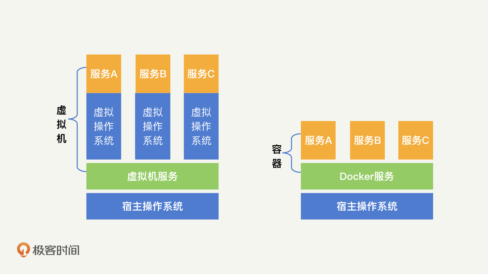
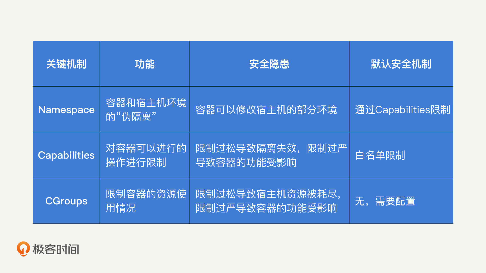
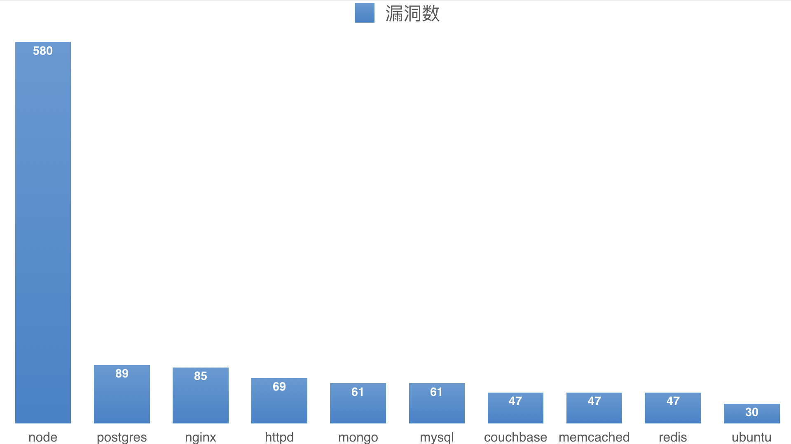
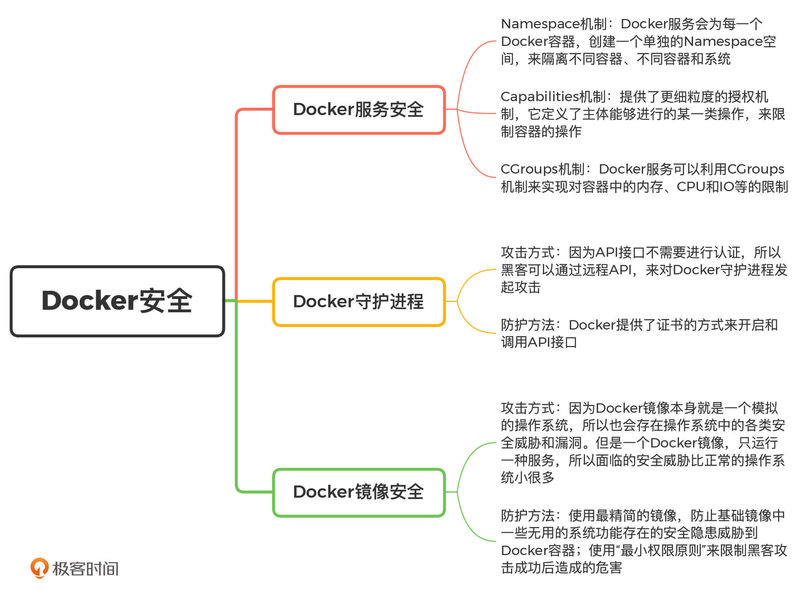

- 00 开篇词 别说你没被安全困扰过.md.html
- 01 安全的本质：数据被窃取后，你能意识到问题来源吗？.md.html
- 02 安全原则：我们应该如何上手解决安全问题？.md.html
- 03 密码学基础：如何让你的密码变得“不可见”？.md.html
- 04 身份认证：除了账号密码，我们还能怎么做身份认证？.md.html
- 05 访问控制：如何选取一个合适的数据保护方案？.md.html
- 06 XSS：当你“被发送”了一条微博时，到底发生了什么？.md.html
- 07 SQL注入：明明设置了强密码，为什么还会被别人登录？.md.html
- 08 CSRF_SSRF：为什么避免了XSS，还是“被发送”了一条微博？.md.html
- 09 反序列化漏洞：使用了编译型语言，为什么还是会被注入？.md.html
- 10 信息泄露：为什么黑客会知道你的代码逻辑？.md.html
- 11 插件漏洞：我的代码看起来很安全，为什么还会出现漏洞？.md.html
- 13 Linux系统安全：多人共用服务器，如何防止别人干“坏事”？.md.html
- 14 网络安全：和别人共用Wi-Fi时，你的信息会被窃取吗？.md.html
- 15 Docker安全：在虚拟的环境中，就不用考虑安全了吗？.md.html
- 16 数据库安全：数据库中的数据是如何被黑客拖取的？.md.html
- 17 分布式安全：上百个分布式节点，不会出现“内奸”吗？.md.html
- 18 安全标准和框架：怎样依“葫芦”画出好“瓢”？.md.html
- 19 防火墙：如何和黑客“划清界限”？.md.html
- 20 WAF：如何为漏洞百出的Web应用保驾护航？.md.html
- 21 IDS：当黑客绕过了防火墙，你该如何发现？.md.html
- 22 RASP：写规则写得烦了？尝试一下更底层的IDS.md.html
- 23 SIEM：一个人管理好几个安全工具，如何高效运营？.md.html
- 24 SDL：怎样才能写出更“安全”的代码？.md.html
- 25 业务安全体系：对比基础安全，业务安全有哪些不同？.md.html
- 26 产品安全方案：如何降低业务对黑灰产的诱惑？.md.html
- 27 风控系统：如何从海量业务数据中，挖掘黑灰产？.md.html
- 28 机器学习：如何教会机器识别黑灰产？.md.html
- 29 设备指纹：面对各种虚拟设备，如何进行对抗？.md.html
- 30 安全运营：“黑灰产”打了又来，如何正确处置？.md.html
- 加餐1 数据安全：如何防止内部员工泄露商业机密？.md.html
- 加餐2 前端安全：如何打造一个可信的前端环境？.md.html
- 加餐3 职业发展：应聘安全工程师，我需要注意什么？.md.html
- 加餐4 个人成长：学习安全，哪些资源我必须要知道？.md.html
- 加餐5 安全新技术：IoT、IPv6、区块链中的安全新问题.md.html
- 模块串讲（一）Web安全：如何评估用户数据和资产数据面临的威胁？.md.html
- 模块串讲（三）安全防御工具：如何选择和规划公司的安全防御体系？.md.html
- 模块串讲（二）Linux系统和应用安全：如何大范围提高平台安全性？.md.html
- 结束语 在与黑客的战役中，我们都是盟友！.md.html
- 捐赠
15 Docker安全：在虚拟的环境中，就不用考虑安全了吗？
你好，我是何为舟。
在13讲中，我们讲了Linux系统安全。但是，当你在和同事讨论Linux系统安全的时候，同事表示，公司的服务都是通过Docker来进行容器化部署的。开发在操作中，并不会接触实际的Linux服务器，所以不会去关注Linux安全 。而且，因为容器是隔离的，就算容器被黑客攻击了，也只是容器内部受到影响，对宿主的Linux系统和网络都不会产生太大影响。
事实上，我知道很多人都有这种想法。但是，你在学习了安全专栏之后，可以试着思考一下，开发使用了Docker就一定安全吗？真的可以不用考虑安全问题了吗？
以防你对Doker还不是很了解，在解决这些问题之前，我先来解释一下这节课会涉及的3个概念，帮你扫清概念障碍。
- Docker服务：Docker所提供的功能以及在宿主机Linux中的Docker进程。
- Docker镜像：通过Dockerfile构建出来的Docker镜像。
- Docker容器：实际运行的Docker容器，通常来说，一个Docker镜像会生成多个Docker容器。Docker容器运行于Docker服务之上。
了解了这3个关键概念之后，我们今天就从这些概念入手，来谈一谈Docker的安全性。
Docker服务安全
我们首先来看Docker服务的安全性。Docker服务本身需要关注的安全性就是：隔离。如果黑客在控制了容器之后，能够成功对宿主机产生影响，就说明黑客突破了Docker服务的隔离保护，也就是我们所说的“Docker逃逸”。
那么，Docker服务是如何对容器进行隔离，来防止“Docker逃逸”的呢？接下来，我就介绍一下这3个关键的隔离机制：Namespace机制、Capabilities机制和CGroups机制。
第1个是Namespace机制。
我们知道，Docker之所以广泛流行，是因为它提供了一种轻量化的隔离环境，也就是容器。
下面，我们重点解释一下“轻量化”和“隔离”这两个词。首先是轻量化。怎么理解轻量化呢？我们可以对比虚拟机来进行理解。虚拟机是自己创造了一个虚拟内核，让这个虚拟内核去和虚拟机的进程进行沟通，然后虚拟内核再和真实的Linux内核进行沟通。而Docker提供的容器，简化了这个沟通过程，让Docker中的进程直接和Linux内核进行沟通。

第二个词是隔离。也就是说，Docker提供的容器环境是和Linux内核隔离的。想要实现这种隔离，就需要用到Namespace机制了。所以，这里我先给你简单解释一下什么是Namespace机制。
Namespace是Linux提供的一种标签机制，Linux内核会对不同Namespace之间的进程做隔离，避免不同的进程之间互相产生影响。所以，Docker服务会为每一个Docker容器创建一个单独的Namespace空间。 这样一来，不同容器之间、容器和系统之间，都是不同的Namespace，也就实现了隔离。
这种基于Namespace的隔离我一般叫它“伪隔离”。因为通过Namespace进行的隔离并不彻底。为啥这么说呢？Docker容器在隔离的环境中，仍然需要使用一些底层的Linux进程和设备支持。比如，你在Docker容器中仍然需要使用鼠标、键盘等输入输出设备，那么容器就必须挂载Linux系统中的/sys来获得对应的驱动和配置信息。也就是说，你在Docker中看到的/sys目录，实际就是Linux系统中的/sys目录。类似地，还有一些没有被Namespace隔离开的目录和模块，包括以下这些内容：
- 部分的进程目录/proc/…
- 内存映像/dev/mem
- 系统设备/dev/sd*
- Linux内核模块
换一句话说，因为容器和宿主机需要共同使用一些服务（比如容器和宿主机使用的是同一个鼠标），所以上面的这些目录和模块，对于容器和宿主机来说，其实是共享的。从理论上来说，如果你在Docker容器中修改了这些目录，那么宿主机当中也会同步相应的修改结果。
第2个Capabilities机制。
我们刚刚说了，Namespace的伪隔离机制让容器和宿主机共享部分目录。那么，这是不是也意味着，Docker容器可以通过这些目录来影响宿主机，从而实现“Docker逃逸”呢？为了避免这种情况，Docker服务使用了Capabilities机制，来限制容器的操作。
Capabilities提供了更细粒度的授权机制，它定义了主体能够进行的某一类操作。比如，一个Web服务需要绑定80端口，但80端口的绑定是需要ROOT权限的。为了防止ROOT权限滥用，Docker会通过Capabilities，给予这个Web服务net_bind_service这个权限（允许绑定到小于1024的端口）。同样地，Docker对容器的ROOT也加了很多默认的限制，比如：
- 拒绝所有的挂载操作；
- 拒绝部分文件的操作，比如修改文件所有者；
- 拒绝内核模块加载。
这里有一点需要你注意，Capabilities对容器可进行操作的限制程度很难把控。这是因为，过松会导致Docker容器影响宿主机系统，让Docker隔离失效；过严会让容器和容器内的服务功能受限，无法正常运行。
所以，在默认情况下，Docker会采用白名单机制（白名单列表你可以在Docker源码中查看）进行限制，即只允许Docker容器拥有几个默认的能力。那有了白名单限制，即使黑客成功拿到了容器中的ROOT权限，能够造成的影响也相对较小。所以我们常说，“Docker逃逸”是一件不容易的事情。
第3个是CGroups机制。
好了，现在你应该知道Docker服务本身是如何防止“Docker逃逸”的了。作为一个容器，Docker显然不能过多地占用宿主机资源，不然对宿主机和自身的可用性都会产生影响。那Docker是如何实现资源限制的呢？
Docker服务可以利用CGroups机制来实现对容器中内存、CPU和IO等的限制。比如，通过下面的命令，我们就可以限制Docker容器只使用2个CPU和100MB的内存来运行了。
docker run -it --cpus=2 --memory="100m" ubuntu:latest /bin/bash
所以，当一个宿主机中运行了多个Docker容器的时候，我们可以通过CGroups，给每一个容器弹性地分配CPU资源。同样地，这个限制既不能过松，过松会导致某一个Docker容器耗尽宿主机资源，也不能过严，过严会使得容器内的服务得不到足够的资源支持。这都需要我们自己经过慎重考量来进行配置，没有默认的安全机制可以辅助我们。
现在，你应该已经了解Docker服务中的3个主要机制了。这里，我把这3个主要机制的特点总结成了一张表格，帮助你加深理解。

Docker守护进程
想要运行Docker镜像，就必须先启动Docker的Daemon守护进程。而启动这个守护进程需要ROOT权限。因此，守护进程本身如果出现漏洞，就会给黑客提供一个权限提升的入口。那通过这个守护进程，黑客能进行哪些操作呢？
首先，作为守护进程，Daemon具备操控Docker容器的全部权限。这也就意味着，黑客可以任意地上线和下线容器、运行黑客自己的镜像、篡改已有镜像的配置等。这么说可能不够直观，我来详细解释一下。黑客通过守护进程，可以将宿主机的根目录共享到镜像中，这样一来，镜像就可以对宿主机的目录进行任意的修改了。另外，除了影响正常的线上容器，黑客还能够通过简单的docker exec命令获取容器环境中的Shell，从而执行任意命令了 。
那么，黑客怎么才能控制Daemon守护进程呢？最简单的方法当然是直接进入宿主机，通过Docker命令进行交互。但如果黑客已经进入宿主机，还去操控容器，就是多此一举了。所以，黑客主要是通过远程API，来对Docker守护进程发起攻击。
守护进程提供的API接口，是为了方便用户去做一些自动化的工具，来操控Docker容器。而在默认情况下，这个API接口不需要进行认证。你可以尝试探测一下，你的公司内外网中，是否存在开放的2375端口（守护进程API默认监听的端口）。如果存在的话，那么你基本上就能够控制这台服务器的Docker守护进程了。
为了避免这种无认证的情况发生，Docker提供了证书的方式来进行认证。开启API接口的命令如下所示：
dockerd --tlsverify --tlscacert=ca.pem --tlscert=server-cert.pem --tlskey=server-key.pem -H=0.0.0.0:2376
通过以上命令，我们就能够在宿主机开启远程API接口。在客户端中，只需要提供相应的证书信息，就能够完成经过认证的API接口调用了。
curl https://127.0.0.1:2376/images/json --cert cert.pem --key key.pem --cacert ca.pem
那通过这样的配置，我们就能解决了API接口的认证问题，也就提升了Docker守护进程的安全性。
Docker镜像安全
了解了Docker守护进程的安全风险和防护方法之后，我们再来看一下Docker镜像的安全。
对于Docker镜像来说，它本身就是一个模拟的操作系统，自然也会存在操作系统中的各类安全威胁和漏洞。但是，由于一个Docker镜像，一般只会运行某一种服务，也就相当于一个操作系统中只有一个用户。因此，Docker镜像面临的安全威胁也会小很多。
接下来，我就为你详细讲解两种保证Docker镜像安全的方式，分别是“使用最精简的镜像”和“最小权限原则”。
使用最精简的镜像
前面我们讲了Docker镜像的概念，我们知道，Docker镜像是通过Dockerfile来构建的。而Dockerfile构建的第一句是FROM ***。以Node.js的环境为例，你的基础镜像可能是node，那么Dockerfile的第一行应该是FROM node。
FROM node
COPY . ./
EXPOSE 8080
CMD [“node”, “index.js”]
这个基础的node镜像实际包含了一个完整的操作系统，但是，在实际应用中，有大部分的系统功能，我们是用不到的。而这些用不到的系统功能，却正好为黑客提供了可乘之机。
Snyk在2019年的Docker漏洞统计报告称，最热门的10个Docker基础镜像，包含的已知系统漏洞，最少的有30个，最多的有580个。

这是非常惊人的。通过一句简单的FROM node，就能让你的Docker镜像中引入580个系统漏洞。那我们该如何避免引入漏洞呢？这个时候，我们就需要使用精简版的基础镜像了。一般来说，精简版的Docker镜像标签都会带有slim或者alpine。
比如说，如果你采用node:10-slim，那么漏洞数会降低到71个。如果使用node:10-alpine，那么已知的漏洞数会降为0。之所以会发生这种现象，是因为使用精简版的基础镜像，可以去除大部分无用的系统功能和依赖库，所以，存在于这些功能中的漏洞自然也就被剔除了。
因此，对于Docker来说，通过使用精简的基础镜像，去除一些无用的系统功能，既能够降低最终镜像的体积，又能够降低安全风险，何乐而不为呢？
Docker中的最小权限原则
除此之外，我们在Linux操作系统中提到的最小权限原则，在Docker镜像中同样适用。
这是因为，在默认情况下，容器内的进程都是以ROOT权限启动的。而Docker又是伪隔离，所以，容器就和宿主机拥有一致的ROOT权限了。虽然Docker通过Capabilities，对容器内的ROOT能力进行了限制。但是，使用ROOT权限去运行一个普通的服务很不合适。为此，我们可以通过USER关键词，来使用一个低权限的用户运行服务。
以Node.js为例，在node的基础镜像中，默认创建了node这么一个具备较小权限的用户。因此，我们可以在Dockerfile中，加入一行USER node来使用这个最小权限用户。
FROM node:10-alpine
...
USER node
CMD [“node”, “index.js”]
当然，如果有的基础镜像本身不提供额外的用户，你就需要自己创建一个了。以ubuntu为例，我们可以通过groupadd和useradd，创建一个node用户，这个用户没有密码、没有home目录、也没有shell，就是一个最小权限用户。Dockerfile的内容如下：
FROM ubuntu
RUN groupadd -r node && useradd -r -s /bin/false -g node node
...
USER node
CMD node index.js
现在，你应该已经知道Docker镜像的两种安全防护方法了，我来简单总结一下。第一个是通过使用最精简的基础镜像，来删减Docker镜像中不必要的功能，从而降低出现漏洞的概率。第二个则是采取最小权限原则，以低权限用户来执行服务，限制黑客的能力。
总结
好了，今天的内容讲完了。我们来一起总结回顾一下，你需要掌握的重点内容。
今天，我主要通过Docker服务、Docker守护进程和Docker镜像这三个方面，带你学习Docker的安全性。
在Docker服务中，主要是利用Namespace、Capabilities和CGroups机制，来对Docker容器进行各种隔离和限制；在Docker守护进程中，我们通过给远程API加上认证功能来保证安全性；在Docker镜像中，我们主要是通过最小镜像和最小权限的原则，去提升镜像本身的安全性。
在实际对Docker进行安全防护的过程中，我们也可以采取各类针对Docker的扫描工具，来发现问题。比如Clair，它会对你的镜像进行静态的扫描分析，并和漏洞库进行比对，从而发现镜像中可能存在的安全漏洞。
以Docker为代表的容器技术，可以说是现在应用开发中最常见的技术了。很多开发人员，现在甚至不用使用原始的Linux系统，直接基于Docker进行开发就好了。因此，我们在开发应用的过程中，要时刻关注Docker的安全性。
好了，我把这一讲的重点内容梳理了一个脑图。你可以用它来查漏补缺，也可以自己来梳理看看，加深印象。

思考题
最后，给你留一个思考题。
“容器上云”是目前普遍的技术趋势，你是否有使用过一些容器云的产品？可以研究一下，在容器云中，云平台给容器设置了哪些安全限制。
欢迎留言和我分享你的思考和疑惑，也欢迎你把文章分享给你的朋友。我们下一讲再见！
© 2019 - 2023 Liangliang Lee. Powered by gin and hexo-theme-book.